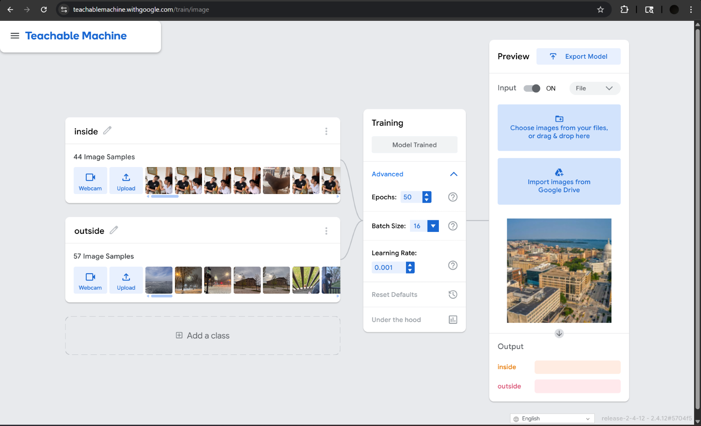
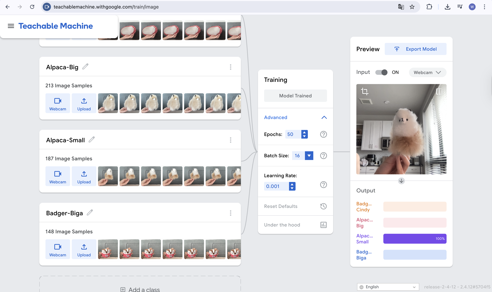

Machine Learning Project
An image classifier trained on 649+ original photographs using Google Teachable Machine,
paired with reflections on Joy Buolamwini's Unmasking AI.
Wuziyang Zhang & Matt Steines | LIS 500
Project
For LIS 500 Project 3, we developed an image classification algorithm using Google's Teachable Machine, a no-code platform that lets anyone train a machine learning model in the browser. Our goal was to experience the full ML pipeline firsthand: collecting original data, training a model, deploying it, and reflecting critically on what the process reveals about bias, representation, and power in AI systems.
Each group member, Wuziyang Zhang and Matt Steines, contributed original, personally photographed images to the training corpus. Matt shot 101 images (inside/outside); Wuziyang shot 548+ images across four animal categories, for a combined corpus of 649+ images. All photographs were taken with our own devices, in our own environments. No images were downloaded from the web, generated by AI, or sourced from existing datasets.
The exercise was designed to complement our reading of Joy Buolamwini's Unmasking AI. Building a model ourselves, making every decision about categories, data collection, and training, put us inside the process that Buolamwini critiques, making her arguments about the coded gaze and training data bias viscerally concrete.
Scope
We trained two separate models, one per group member, using Teachable Machine's image classification module.
Matt's Model: Classes
Binary classification: scenes are labeled as either Inside or Outside. 44 indoor + 57 outdoor images.
Wuziyang's Model: Classes
Four-class animal classifier: two alpaca toys (big & small) and two badger pets (Cindy & Biga), with 213 / 187 / 148+ images per class.
Matt's Images
44 indoor scenes + 57 outdoor scenes, all photographed personally on campus, in apartments, parks, and streets.
Wuziyang's Images
213 (Alpaca-Big) + 187 (Alpaca-Small) + 148 (Badger-Biga) + Badger-Cindy images, all original photos of real animals and toys.
The inside/outside classification task was chosen because it appeared straightforward, and proved to be more culturally loaded than expected. What counts as "inside" vs. "outside" shifts across building types, climates, and cultures. A covered market, a greenhouse, a screened porch: the classifier must make a call our categories did not fully anticipate.
Dataset
All 649+ training images are original photographs taken by Matt and Wuziyang on personal devices. No downloaded or AI-generated images were used. The full dataset is available for download below.
- Download Matt's dataset — 101 original images (Inside / Outside)
- Download Wuziyang's dataset — 548+ original images (Alpaca-Big, Alpaca-Small, Badger-Cindy, Badger-Biga)
Test Model
Two models are available to try. Both run entirely in your browser. No images are sent anywhere. Allow webcam access when prompted.
Model 1: Inside / Outside (Matt)
Point your camera at a room or step outside. Edge cases like covered walkways and atriums are especially interesting to test.
Matt's inside/outside model running live in Teachable Machine
Model 2: Alpaca & Badger Classifier (Wuziyang)
Hold up an alpaca toy or let Cindy / Biga wander into frame. The model distinguishes Alpaca-Big, Alpaca-Small, Badger-Cindy, and Badger-Biga with 548+ training images.
Wuziyang's alpaca and badger classifier running live in Teachable Machine
Process
We used Teachable Machine's image model type, which is built on TensorFlow.js and uses MobileNet as a pre-trained base via transfer learning. Each training round took approximately 30-60 seconds in the browser once images were uploaded.
Data Collection
Each group member independently photographed 100 scenes in their everyday environments (apartments, campus, parks, libraries, streets) using a personal phone. Images were shot in natural lighting across different times of day to increase variety.
Uploading & Labeling in Teachable Machine
Images were uploaded to Teachable Machine and assigned to their respective class folders. Matt's images were split 50/50 between "Inside" and "Outside." Wuziyang's images were distributed across 4 classes with 100+ images per class.
Training
We clicked "Train Model" in Teachable Machine. The platform performed transfer learning on top of MobileNet, a convolutional neural network pre-trained on ImageNet, adding custom classification layers for our specific categories. Training ran entirely in the browser with no GPU required.
Testing & Iteration
We tested the live webcam preview within Teachable Machine and observed the confidence scores. Edge cases, dim lighting, transitional spaces, cluttered backgrounds, often revealed lower confidence, pointing to gaps in the training data.
Export & Deployment
We exported each model as a TensorFlow.js bundle (model.json + weights.bin + metadata.json) and embedded Matt's inside/outside classifier directly on this page using the Teachable Machine JavaScript library. The model runs entirely in the browser. No images are uploaded to any server.
Training Interface Screenshots
Screenshots from the Teachable Machine training panel for each model, showing uploaded image samples, training settings, and live preview output.


Sample Training Confidence
Confidence readings observed in the Teachable Machine preview panel after training.
Matt's Model: Inside / Outside
Indoor scene test
Outdoor scene test
Edge case: dim restaurant
Wuziyang's Model: Alpaca & Badger
Alpaca-Big test
Alpaca-Small test
Badger-Biga test
Edge case: Badger-Cindy test
Lessons Learned
The assignment asked us to reflect on Joy Buolamwini's Unmasking AI as we completed this project. Both group members wrote individual statements. A combined conclusion follows.
Matt Steines, Individual Statement
When I first heard we were going to train our own machine learning model using Teachable Machine, I truly didn't know what to expect. Despite being someone who has taken artificial intelligence classes before, I had never used the Teachable Machine program so I was actually quite curious going into this.
For my model, I went with something simple: indoor vs. outdoor image classification. I used photos I found on my camera roll, throughout an unspecified period of time. These pictures ranged from outdoor shots I had snapped before, to indoor shots of my friends and I grabbing dinner. While capturing these, the idea that they would later be used as training data had never crossed my mind. To begin, I created two classes and fed about ~50 images of each situation into the program, hit train and waited for a working model. This process felt much simpler than the projects I had worked on before.
When I started testing it, I found the model was quite accurate, almost surprisingly so given the amount of effort I put into it. However, the more I played with it I noticed something weird. The model seemed to be relying on lighting as its heaviest weighted factor, resulting in some slightly incorrect results. Upon turning my camera on in a well-lit room, the model struggled to differentiate whether it was inside or outside. The model clearly found a shortcut to classification and decided to run with it. Intuitively I even considered this, so I included different lighting in each of the classes to make sure it wasn't simply light vs. dark.
It was this "feature" that I noticed that called me back to Joy Buolamwini in Unmasking AI. Buolamwini notes this idea of a "coded gaze," meaning that AI isn't fully neutral but actually sees the world through the biases and inputs of whoever entered the data. In my case this resulted in images that were commonly my apartment, specific streets or specific lighting in other restaurants and places. Outside to me in the Midwest throughout the winter is obviously a very different experience than outside for those in warmer areas. This distinction is what allows a model like this to work as designed, but with an asterisk.
Buolamwini's research focused heavily on facial recognition, especially on systems being trained on people with different skin colors. The research specifically showed worse performance on darker-skinned faces, representing a clear example of coded bias, not necessarily a broken piece of technology. Even if unintentional, nearly every piece of technology has some sort of "fingerprints" from the creator left over. My own model's biases came purely through omission rather than any malicious reason, which is fully possible for every type of model training.
Luckily for me my model isn't designed for a high-stakes purpose, so its confusion with a dimly lit room and a dark exterior has very little impact. However it can absolutely still be used as an example of the inherent flaws in dataset selection. These images directly reference my world, but everyone's world is so vastly different that for large-scale applications it would need to be trained on a far more advanced level of data. This is something that Buolamwini returns to constantly, as the common assumption is that everyone's experience is simply universal. These walls and these lights are not the dictionary definition of "indoor," however they are what indoor means to me, which is vastly different depending on where I am, whether in a dimly lit restaurant, a bright sporting event, or the warm lighting of my lamp. It's these experiences that allow blind spots to form.
My model wasn't focused on what indoor or outdoor means in a literal sense, as I could've easily changed the titles to gibberish and gotten identical results. The model found whatever pattern aligned amongst the pixels and latched to it, as previously described with the lighting problem. Joy describes this as models struggling when they leave the training data, as the true problem set will always look vastly different than the pre-determined selection of data.
I was truly amazed by how quickly the program works, as I got a semi-accurate image classification working in a very short time. This amazement does come at a slight worry, however, as it's clear that the inaccuracies and flaws in the current program could be used in much more detrimental scenarios than what we are using these for. AI and its advancements are a double-edged sword. Productivity has skyrocketed for those that know how to properly use it as a tool, yet it remains a detriment to those that use it as a crutch with no other knowledge of the topic they used the model for.
Building something this simple, alongside my other experience with AI and machine learning, has had a great impact on my daily interactions with algorithms, especially those I had never thought of prior to this. Whether it be my Spotify recommendation engine, the content my social media accounts put up as "for me," or the ever-growing "AI-powered" devices that seem to pop up every day. This project made me think large-scale more than anything I had ever worked on in concepts. I look at everything with this idea of the "coded gaze" and bias via omission now, which opened my eyes so much to the potential good or bad that AI can do depending on its developers.
Wuziyang Zhang, Individual Statement
When I first started working with Teachable Machine for this assignment, I expected the process to be simple, but I did not expect it to make me think so much about bias, representation, and the limits of machine learning. My model focused on four image classes: Badger-Cindy, Alpaca-Big, Alpaca-Small, and Badger-Biga. At first, this seemed like a straightforward visual classification task. I gathered many images for each category, trained the model, and was impressed by how quickly it produced predictions. But as I continued testing it, I started to notice that building even a small model raises larger questions that connect directly to Joy Buolamwini's Unmasking AI.
The lesson from Unmasking AI that resonates most with me is the idea that AI systems are not neutral. They reflect the choices, assumptions, and blind spots of the people who build them. Buolamwini describes this as the "coded gaze," and this concept became much more concrete for me while completing this assignment. Even though my project was much smaller and lower-stakes than the facial recognition systems discussed in Unmasking AI, I could still see how my own decisions shaped the model's behavior. The categories I created, the images I selected, the camera angles I used, the lighting conditions, and the backgrounds all became part of what the model learned. In other words, the model was not learning some universal truth about these objects. It was learning from my version of them.
This became especially clear when I thought about how the model might be relying on shortcuts rather than truly understanding the differences between categories. It may focus heavily on size, the angle at which I held the object, the distance from the camera, or even the background behind it. If most of my "Alpaca-Big" images were taken in one type of lighting or from one consistent distance, the model may associate those features with the label instead of the object itself. That means the system can appear accurate during testing while still being fragile or biased. This is one of the most important lessons I took from Unmasking AI: a model can seem to "work" while still being shaped by hidden patterns in the training data.
This was especially obvious with my two Badger categories. Because they look very similar, and the main difference is simply that one is bigger and one is smaller, the model seemed to treat the object's apparent size in the image as one of its strongest signals. When I held one of the Badgers closer to the camera, it was often identified as the larger one. When I held it farther away, it was more likely to be classified as the smaller one. This suggests that the model was not consistently recognizing the object itself, but instead relying on relative scale, camera distance, and composition. That observation made me realize how easily machine learning models can latch onto surface-level visual cues instead of the distinctions that humans actually care about. It also showed me that even when a model seems accurate, its logic may still be shallow and fragile.
Another lesson that stood out to me is how omission creates bias. Buolamwini's work shows that harm does not only come from intentionally prejudiced systems, it can also come from what is left out. That idea felt very relevant to my own project. If my dataset does not include enough variation in backgrounds, positions, lighting, or object presentation, then my model is learning from a narrow slice of reality. It may perform well on images similar to the ones I provided, but struggle the moment the context changes. This helped me understand that bias is not always dramatic or obvious. Sometimes it is built quietly into a system through limited training examples and unnoticed assumptions.
What also resonated with me is the gap between training data and the real world. While doing this assignment, I realized that the model does not actually "know" what a badger or alpaca is in a human sense. It only detects patterns across pixels and connects those patterns to the labels I assigned. That is powerful, but also limited. A small change in framing, object placement, or environment could confuse the model. This reminded me of Buolamwini's larger warning that AI systems often break down when they encounter people, faces, or situations that differ from the data they were trained on. My assignment made that issue feel much more real and immediate.
Overall, Unmasking AI made me more critical of what it means for a model to be "accurate." Before this assignment, I might have judged success only by whether the predictions looked correct most of the time. Now I think more carefully about why the model is making those predictions and what assumptions are embedded in the dataset. This project showed me that even simple machine learning tools carry the fingerprints of their creators. That lesson is the most resonant for me: AI reflects human choices, and because of that, building responsible systems requires more than technical success. It requires awareness, reflection, and careful attention to what the model is really learning.
Shared Conclusion
This project reinforced for both of us that machine learning is never just a technical exercise. It is an exercise in curation, categorization, and representation. The 649+ photographs we contributed to our training corpus are not a neutral sample of the visual world; they are a specific slice of it, shaped by our identities, our environments, and our implicit assumptions.
Joy Buolamwini's work challenges us to ask not just "does the model work?" but "for whom does it work, and at whose expense?" As students entering fields that increasingly rely on AI systems, information science, economics, technology policy, we carry this question forward. Who is building the models? Whose world does the training data represent? Whose is left out? And who bears the cost when the system fails to see them? Teachable Machine made the mechanics of machine learning accessible to us in 30 minutes. What Unmasking AI taught us is that accessibility to the tools does not automatically produce equitable outcomes. That requires something harder: a sustained commitment to asking who is in the room, whose experiences are in the data, and who will be harmed when we get it wrong.
References
- Teachable Machine, Matt's Model (Inside/Outside): teachablemachine.withgoogle.com/models/dQJGjx2nN/
- Teachable Machine, Wuziyang's Model (Alpaca & Badger): teachablemachine.withgoogle.com/models/1ypVHxwwK/
- Buolamwini, J. (2023). Unmasking AI: My Mission to Protect What Is Human in a World of Machines. Random House.